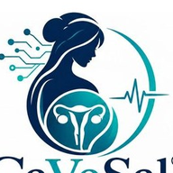

CaVeSal® GYNSimulador de casos clínicosCasos ficticios con fines de entrenamiento. Cada respuesta se respalda en la bibliografía del módulo correspondiente. No reemplaza el juicio clínico. Simulador libre también en la versión Demo. © 2026 Dr. Carlos Vera Salerno · CaVeSal® · Ley N.º 1328/1998 (Paraguay).